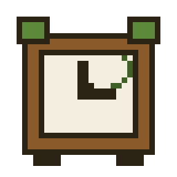
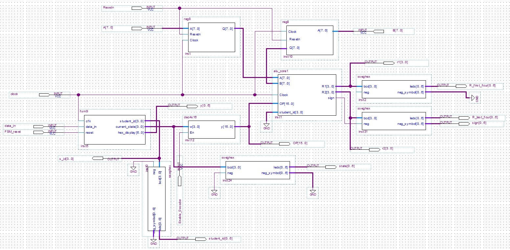
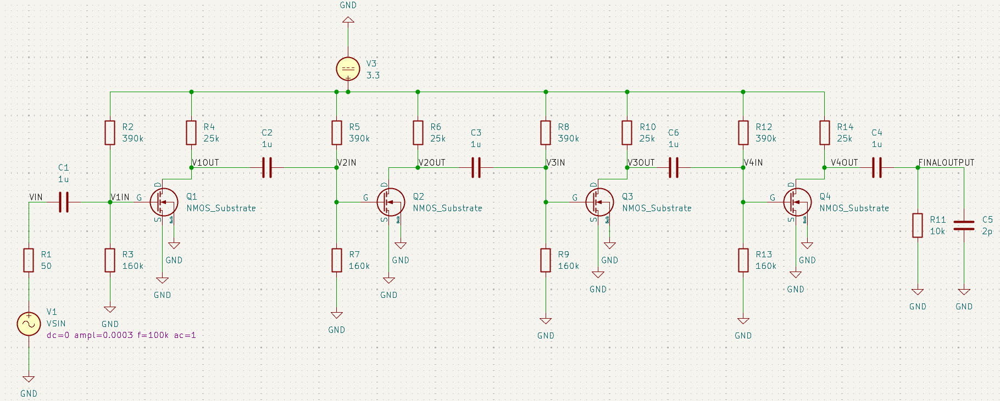
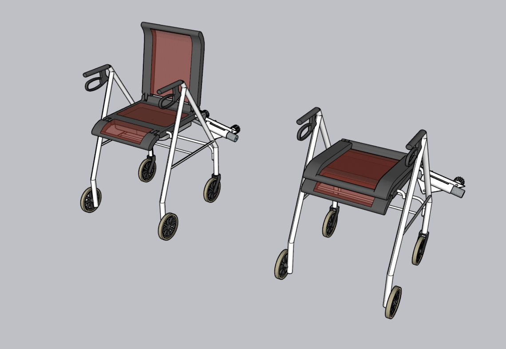

[ INVENTORY ]
An ESP32-based alarm clock that won't shut off until you scan an NFC card built to actually solve my own problem of snoozing alarms on repeat. Handles NFC reading, RTC timekeeping, an OLED display, and a button-driven menu for setting alarms.

Arithmetic logic unit designed in VHDL and implemented in Quartus II as part of digital logic coursework — covers instruction decoding, arithmetic/logic operation select, and testbench verification.

Analog electronics project designing and analyzing a multi-stage MOSFET amplifier, covering biasing, gain stages, and frequency response.

Team-based redesign of an assistive mobility device, focused on improving usability and function for the end user.
